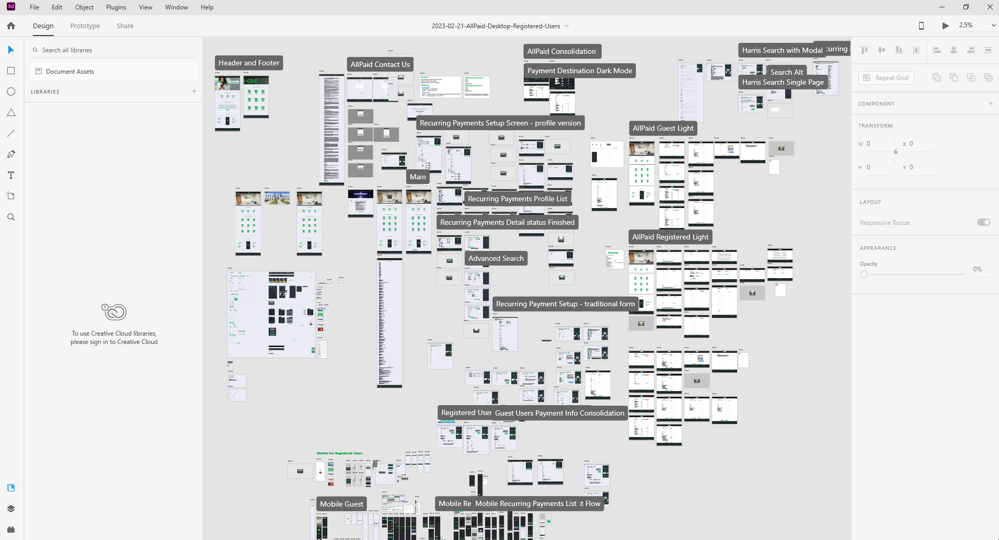

Aventiv
2023-03-20

Situation
Aventiv owns the AllPaid brand which provides online payment processing services to local and state governments. Giving users the ability to pay their water bill, taxes, parking tickets, and other fees through a secure web application.
This project was already a year in production with many new features on the roadmap. The previous UX/UI Designer wasn't able to keep up with the workload. I was hired to work within the company's established style guidelines for the project. I was tasked with creating prototype pages for upcoming new features that would be added to the existing web application.
Features:
- AllPaid Wallet was planned to store up to five payment methods. These included debit cards, credit cards, and e-check.
- Shopping Cart was designed to allow users to add multiple items to an online shopping cart and then pay them all with one payment method. Instead of having to pay each one individually.
- Auto Pay was planned to give users the option to setup a default payment method for monthly payments like a water bill.
Challenge

As mentioned, this project was already a year old and the base system was being used in production. The colors, fonts, components, images, page layouts, and user flow of the web application had already been previously decided by a committee.
They hired me to translate backlogged JIRA tickets into working prototype pages using Adobe XD, while maintaining the established design language. Which meant creating new feature pages for mobile and desktop that looked like they were part of the existing web application. This was no small feat.
It didn't take long for me to get familiar with the design files inside Adobe XD. I noticed redundancy and inconsistency in many areas of the design and user flow. These issues were causing conflicts within the decision making committee. While forcing the developer to do extra work which slowed production.
The decision making committee would hold multiple rounds of meetings per day to gather everyone's opinion on the color and placement of a button before making a decision.
The developers were frustrated that their design ideas were being ignored. This resulted in more meetings to get everyone's feedback on how the new feature pages should be designed.
I was invited to some of these meetings to provide expert guidance as the UX/UI Designer and to advocate for the end users. I quickly realized almost everyone came with their own agenda on how the web pages should be structured to make their jobs easier and to gain points for the bonus at the end of the quarter.
Action
I worked with the project manager to complete the urgent backlogged JIRA tickets. Then we met with the lead developer to talk about streamlining the process to hand off the Adobe XD prototypes.
Once I completed the outstanding JIRA tickets I met with the project manager to discuss who is on the decision making committee, how we can improve the process, and streamline the web app for end users who want to quickly pay a bill and get back to their lives.
This took months of back and forth emails and endless meetings. A classic case of too many cooks in the kitchen.
Result
I worked with the project manager to host a spreadsheet on the company's internal SharePoint site to track all the design files I made, with their associated public prototype links for the developers to view and work from.
I worked with the developers to create a shared design and development component library to make their jobs easier. This moved us toward a page template system instead of having every page designed in detail without any options for the developers to change or improve them.
My project manager and I convinced the decision making committee to reduced the web application steps from five to three. Streamlining the process so its easier and faster for end users to make a payment.
I made a dark mode toggle system for the mobile and desktop version of the web application.
The team and I completed almost all of the planned features on the product roadmap.
Mass Layoff Chaos
On Tuesday, March 7th, 2023 at 11:00 AM EST Aventiv held an unplanned "All Hands Meeting".
Employees were informed the company would be restructuring, which lead to the elimination of 18% of the workforce. I was part of the unlucky group.
While I will miss the team I worked with for the last two years. I'm optimistic about the future and look forward to my next adventure.